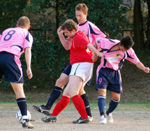

|
Oi Futo, Saturday 31st October.
The first thing that comes to mind on meeting the Panthers this season is ‘what is the opposite of ‘pretty in pink’ because their kit just begs the question…
But, despite the look, we had also had a glance at the league table beforehand and in addition were greeted with the strange sight of a division two team actually taking a warm up seriously. (Or just actually warming up…which is the same thing really.) Phil Lowes is definitely finding life tough in the second division as his talk of ‘come on now let’s get together and do some stretching’………..was greeted with the usual ‘I’m off for a poo’…’phone just rang’…’look at those crows shagging’….(at least 5 dragged away), and the fact that Sid turned up in an orangey top looking silly didn’t help either. So, admitted, – Vags pre match concentration level is not all it could be.
Darren did have some sage advice in the pre-match team talk and for a nano second or so we were focused…but then a plane flew over from Haneda and 14 sets of eyes went upwards.
Then the game kicked off and the Vags that are today’s model were very focused indeed and very into it. Muzzy chased down a ball after about 10 mins and despite the claims from the defender that the ball had gone out – Muzzy hassled, dispossessed yer man, cut in from the touchline and passed it by the keeper with (can I say it about someone from Manchester?) nonchalance. Bingo. There was some controversy about whether the ball had gone out for a throw but from where I was stood, 70 yards away on the opposite side of the pitch, the ball was definitely in….anyway their linesman didn’t put his flag up and he was three yards away….anyway Muzzy said it was in and he wouldn’t lie would he? He’s a nice lad.

Unfortunately the Panthers are actually a very good side indeed and given their predisposition to go behind and then stage comebacks for fun – it was still going to be a war of attrition, and so it proved. They have good shape, play some nice one touch football and have confidence. So it turned out that the goal didn’t have that much impact on the half as the Panthers bared their teeth, put together some sleek passing and clawed their way back into the game (ok, ok…won’t do anymore of that, promise). As halftime neared Vags were caught by a very swift counter and exposed down the right – long ball was played across the field and Graham lobbed to shouts of ‘oh no’ by the keeper himself.
1-1 at half time and that is how it was to remain – very tight and edgy in the second half, some good chances at both ends (free kick off the bar for the Panthers and a one on one plus a header from a corner inches wide for the Vags). A defeat would probably have been harsh on either team and if the return match is as good as this then I would get yourselves along to watch it. Man of the match for me was Ken who ran all over the place although there were quite a few candidates out there.
Report by Richard Straughan
|